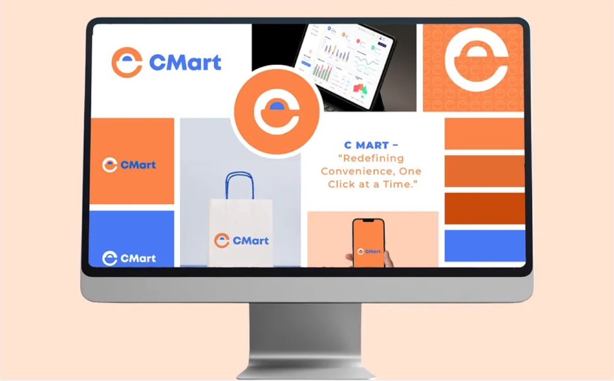
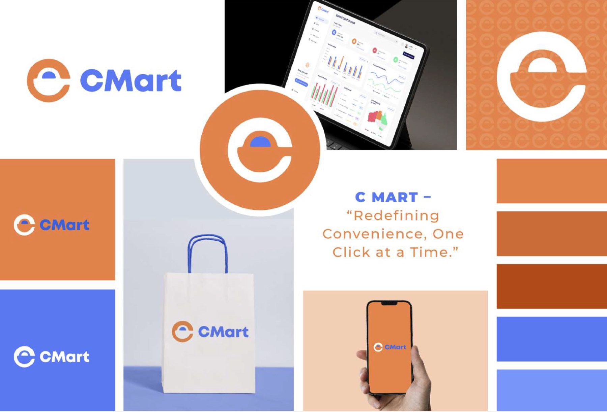
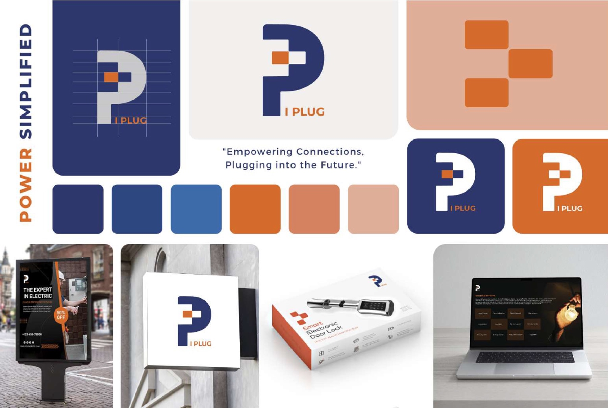

Graphic design
Brand Moodboard Collection
Visual directions for CMart and I Plug, bringing together logos, colour palettes, patterns, and brand applications.

01 / MOODBOARD
CMart.
Concept. The CMart moodboard explores a friendly, contemporary identity for everyday retail. The shopping-bag symbol uses negative space to suggest the letter C, connecting the brand name with the shopping experience in one compact mark.
Design approach. Orange brings warmth and energy, while blue provides contrast and a consistent accent across the identity. Logo variations, a repeating pattern, shopping-bag packaging, and digital applications bring the direction together as a visual system rather than an isolated logo.
Why this direction. Showing physical and digital applications side by side helps assess whether the identity stays recognisable across different settings. The simple symbol gives the busier dashboard and promotional layouts a clear anchor; restrained use of the brighter colours helps prevent them from competing with the content.

02 / MOODBOARD
I Plug.
Concept. The I Plug moodboard develops the idea of “Power Simplified” for an electrical solutions brand. A bold geometric mark and a direct visual language aim to make the identity feel clear, structured, and easy to recognise.
Design approach. Deep blue provides a steady foundation, with orange highlighting the connection detail in the logo. The construction grid, supporting colour palette, and reversed logo treatments establish consistency, while signage, product packaging, and a website mockup explore how the identity works in use.
Why this direction. Strong shapes and contrasting colours help the mark remain visible on both small packaging and larger signs. The applications balance a technical character with approachable communication. Keeping orange as an accent preserves emphasis, while simpler logo treatments protect clarity at smaller sizes.
